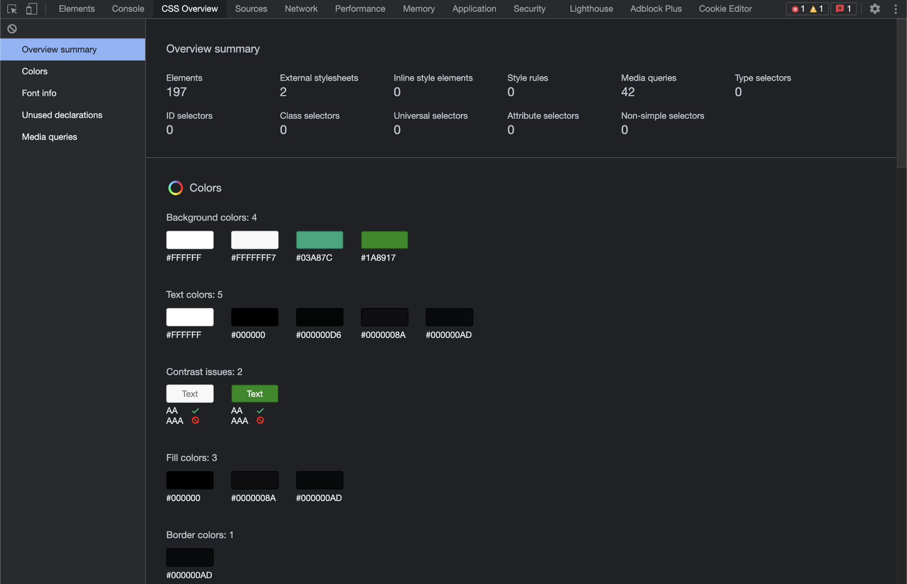
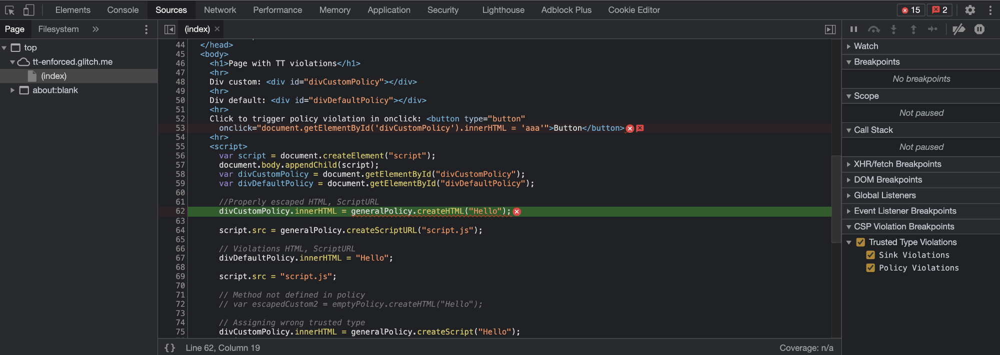
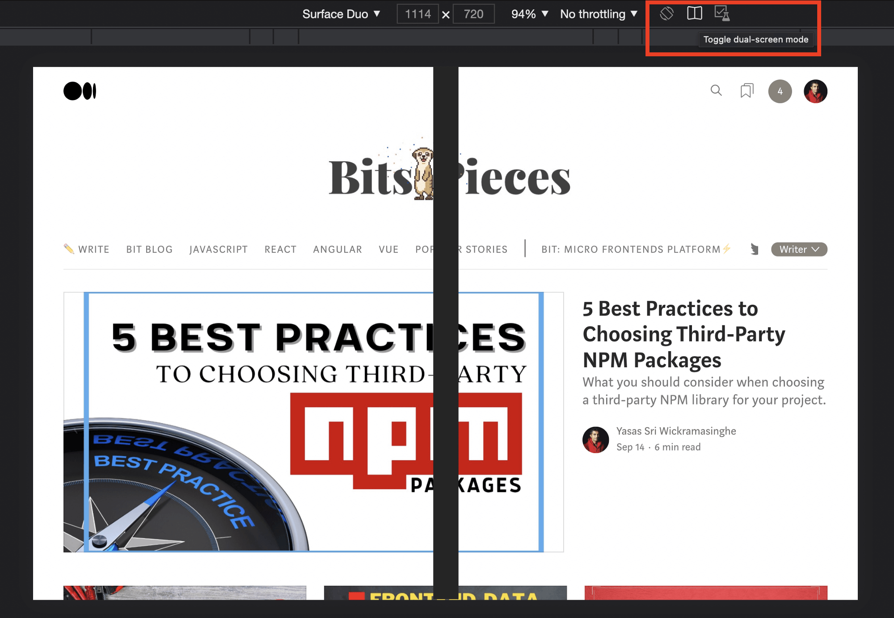
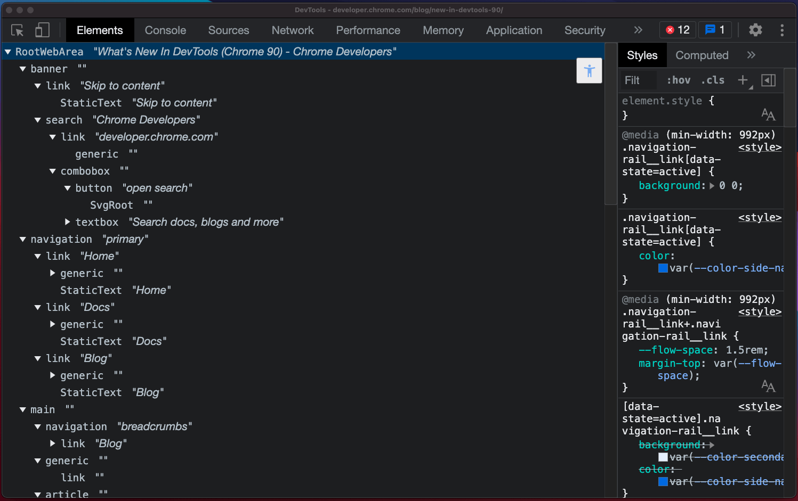

Скрытые функции Google Chrome для разработчика
Содержание
Обзор CSS
Обзор CSS предоставляет сводку всех стилей, используемых на веб-странице. Он включает подробную информацию о цветах, шрифтах, медиа-запросах и неиспользуемых объявлениях. Эта функция пригодится, когда вы вносите изменения в пользовательский интерфейс CSS, и вам больше не нужно использовать сторонние инструменты, такие как палитра цветов.
Вкладка Обзор CSS в Инструментах разработчика Chrome
Как включить эту функцию?
- В Google Chrome перейдите «Представление» — «Разработчику» — «Инструменты разработчика».
- Откройте Настройки.
- Выберете вкладку Экспериментальные функции.
- Включите обзор CSS.
- Закройте окно DevTools и откройте его снова.
- В DevTools появится новая вкладка под названием Обзор CSS.
CSP Violations — предупреждения о возможных уязвимостях безопасности
Точки останова CSP violations в Chrome DevTools перехватывают возможные исключения, связанные с нарушениями CSP, и указывают на них в коде.
Включение этой функции добавит дополнительный уровень безопасности вашему приложению и уменьшит уязвимости, такие как межсайтовый скриптинг (XSS).

Chrome автоматически определяет возможное нарушение CPS и выделяет код ошибки
Как включить эту функцию?
Разработчики могут включить точки останова CSP на вкладке «Источники», как указано ниже.- Перейдите на вкладку Экспериментальные функции в Chrome DevTools.
- Установите флажок Показать нарушения CSP.
- Закройте окно DevTools и откройте его снова.
- В разделе «Точки останова при нарушениях CSP» отметьте «Нарушения доверенного типа» и типы нарушений, чтобы активировать эту функцию.
Включение точек останова при нарушении CSP в инструментах разработчика Chrome
Новые инструменты для редактирования шрифтов — мгновенное отображение стилей шрифтов
Знаете ли вы, что можете мгновенно изменить все шрифты на веб-сайте и посмотреть, как они выглядят, не касаясь кода?
Chrome DevTools предоставляет экспериментальный инструмент для редактирования шрифтов, который можно использовать для изменения настроек шрифта. Вы можете изменить семейство шрифтов, размеры, высоту, толщину и увидеть изменения в режиме реального времени.

Изменение стилей шрифтов с помощью панели стилей Chrome
Как включить эту функцию?
- Перейдите на вкладку Экспериментальные функции в Chrome DevTools.
- Установите флажок «Включить новые инструменты редактора шрифтов на панели стилей».
- Закройте окно DevTools и откройте его снова.
- Выберите элемент HTML, который включает свойства шрифта, которые вы хотите изменить.
- Вы заметите значок редактора шрифтов на панели стилей.
Режим двойного экрана — имитация двойного экрана для складных устройств
Включив режим двойного экрана, вы можете отлаживать свое веб-приложение на устройствах с двумя экранами в самом эмуляторе Chrome DevTools. Эта функция помогает при отладке устройств с двумя экранами, таких как Surface Duo.

Эмуляция двойного экрана в Chrome DevTools
Как включить эту функцию?
- Перейдите на вкладку Экспериментальные функции в Chrome DevTools.
- Выберете Эмуляция: поддержка двухэкранного режима.
- Закройте окно DevTools и откройте его снова.
- Откройте веб-страницу, которую вы хотите протестировать, с помощью опции Toggle Device Toolbar в правом верхнем углу окна DevTool.
- Переключите эмулятор на устройство Surface Duo (или другое доступное складное устройство).
- Затем нажмите «Переключить двухэкранный режим», чтобы эмулировать ваше веб-приложение в двухэкранном режиме.
Полное древовидное представление доступности — просматривайте элементы с более подробной информацией об их доступности
С помощью дерева доступности в Chrome DevTools вы можете проверять доступность объектов, созданных для каждого элемента DOM.
Эта функция немного похожа на функцию «Проверить элементы». Но она позволяет вам копнуть глубже и получить больше деталей доступности в вашем веб-приложении.

Полное представление дерева специальных возможностей на панели DevTools Elements
Как включить эту функцию?
- Перейдите на вкладку Экспериментальные функции в Chrome DevTools.
- Выберете древовидное представление полной доступности на панели «Элементы».
- Закройте окно DevTools и откройте его снова.
- Переключите Режим просмотра элементов на Древовидное представление с полным доступом, нажав кнопку специальных возможностей на панели «Элементы».
Заключение
В этой статье я обсудил 5 мощных, но необычных экспериментальных функций Chrome DevTools. Надеюсь, статья поможет вам упростить жизнь разработчика с помощью Chrome DevTools. Спасибо за чтение!